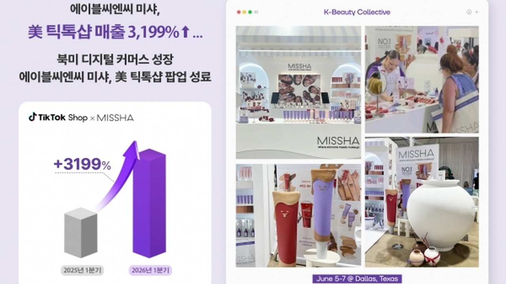
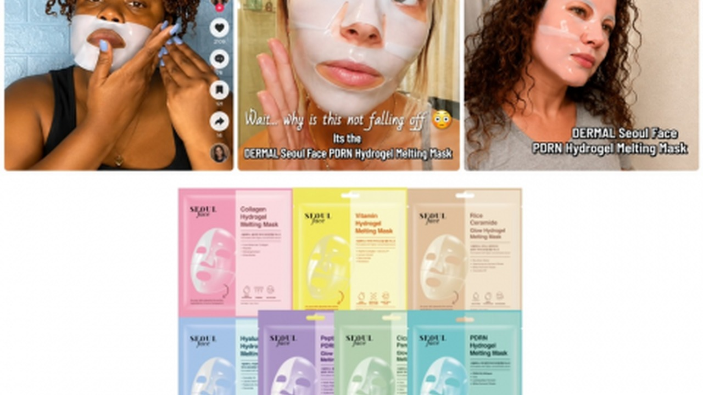
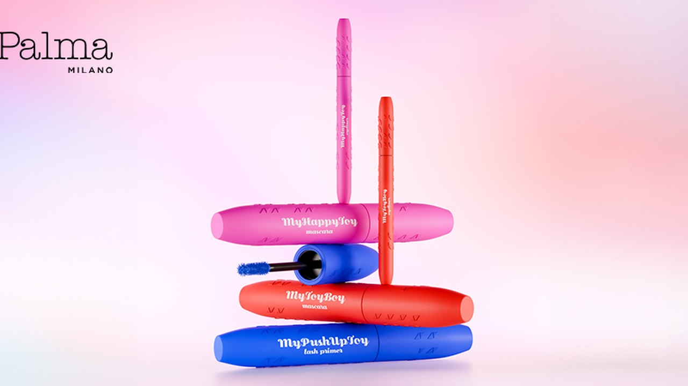
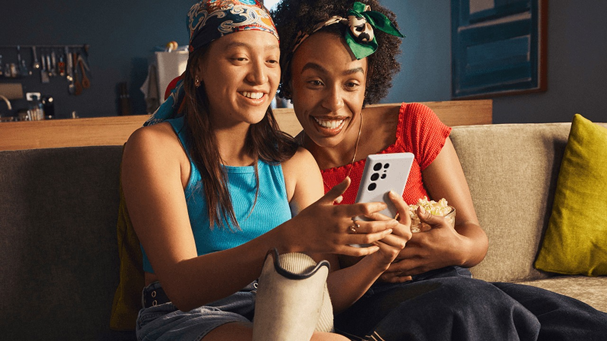
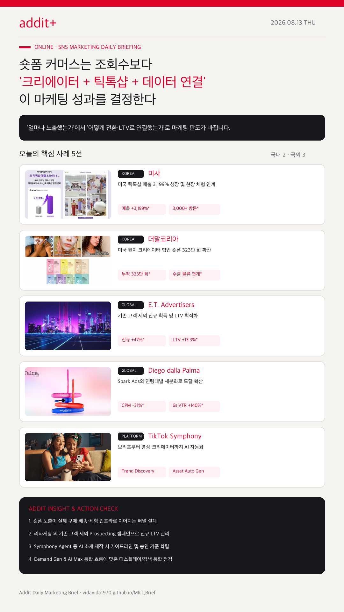

01
K-뷰티 숏폼은 오프라인 체험과 틱톡샵 연결이 승부처다
미샤(미국 TikTok Shop +3,199%)와 더말코리아(323만 회)처럼 콘텐츠와 실제 유통 인프라가 묶일 때 매출 폭발이 일어납니다.
해외 SNS 커머스, 기존 고객 제외 LTV 최적화, Spark Ads 세분화, AI 소재 공급망 자동화가 하나의 시스템으로 연결됩니다.
미샤(미국 TikTok Shop +3,199%)와 더말코리아(323만 회)처럼 콘텐츠와 실제 유통 인프라가 묶일 때 매출 폭발이 일어납니다.
E.T. Advertisers 사례처럼 기존 구매자·팔로워를 제외하고 신규 LTV를 측정할 때 CAC 32.6% 개선을 얻습니다.
Diego dalla Palma처럼 자연스러운 톤의 Spark Ads를 세분화된 타깃층에 병렬 배치하여 도달 570만과 CPM 31% 절감을 달성했습니다.
TikTok Symphony Agent는 트렌드 분석, 브리프 생성, 스토리보드, 영상 및 크리에이터 매칭을 하나로 이어줍니다.
Display Ads의 Demand Gen 전환과 DSA의 AI Max 이전으로 소셜 비주얼과 검색 의도가 한 리포트에서 관리됩니다.

KOREA댈러스 오프라인 현장 체험 부스와 틱톡 크리에이터 리뷰, 틱톡샵 판매를 통합 운영해 전년 동기 대비 TikTok Shop 매출 3,199% 성장을 기록했습니다.

KOREA마스크팩 밀착력과 일상 사용 장면을 크리에이터 숏폼 콘텐츠로 제작해 누적 조회수 323만 회를 달성하고 해외 화장품 물류 수출 인프라와 연결했습니다.
기존 구매자와 오가닉 팔로워를 제외한 Prospecting 전략으로 신규 구매자 47% 성장, 신규 CAC 32.6% 개선, 예상 LTV 13.3% 향상을 달성했습니다.

GLOBAL인플루언서 자율 톤을 살린 Spark Ads를 연령대별 소재로 나눈 캠페인으로 총 도달 570만, CPM 31% 개선, 6초 VTR 140% 향상을 기록했습니다.

PLATFORM브랜드 가이드라인과 상위 광고 패턴을 학습해 브리프-스토리보드-소재 제작과 크리에이터 후보 추천을 지원하는 AI 크리에이티브 공급망 솔루션입니다.
Display Ads 지면이 Demand Gen으로 통합되어 유튜브, 디스커버, 지메일 시각 지면이 단일 캠페인으로 관리됩니다.
Google Blog →검색 자동화인 DSA가 AI Max로 전면 업그레이드되는 일정이 발표되었습니다.
AI Max 일정 안내 →
숏폼 마케팅은 단순 영상 조회수에서 멈추면 성과가 왜곡됩니다. 틱톡샵, 수출 물류, 오프라인 체험, 신규 LTV 측정이 하나의 퍼널로 맞물려야 진짜 매출이 일어납니다.
{kind=link}